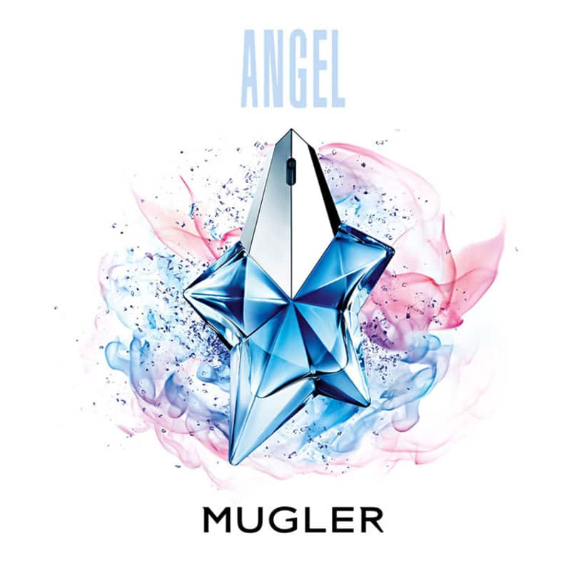

As características fortes e realizadoras da feminilidade madura e experiente de Angel Eau de Parfum são progressivamente desenvolvidas.
Esta nota representa a mulher paradoxal de Mugler, pura e sensual, terna e conquistadora. A nota celestial: um mundo novo de pureza.
Uma vibração pura, transparente e ligeira,
este fôlego penetrante coloca a fragrância à parte, com uma nota azul para evocar o espaço infinito.

Thierry Mugler Angel
Angel Mugler Show Star de Mugler é um perfume Feminino. Angel Mugler Show Star foi lançado em 2010.
Angel Mugler Show Star foi criado por Olivier Cresp e Yves de Chirin. As notas de topo são Côco, Notas frutadas, Morango,
Bergamota, Melão, Jasmim, Tangerina e Cássia as notas de coração são Mel, Ameixa, Amora, Bagas vermelhas, Pêssego, Rosa,
Orquídea, Jasmim, Damasco e Lírio-do-vale as notas de fundo são Cumarina, Chocolate amargo, Patchouli ou Oriza, Fava Tonka,
Baunilha, Caramelo, Âmbar, Sândalo e Almíscar.